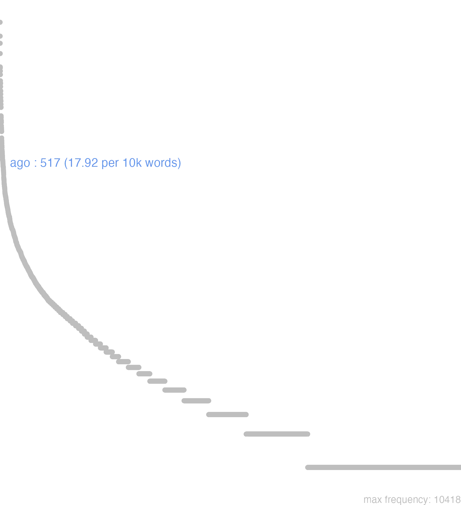

4 ago
4.0.0.1 bases lexicais
id: http://lila-erc.eu/data/id/lemma/88140
classe: verbo
paradigma: 3ª conjugação (sem vogal temática)
outras grafias:
variantes do lema:
ago presente | indicativo | 1ª pessoa singular | voz ativa
agere presente | infinitivo | ativo
aget futuro | indicativo | 3ª pessoa singular | voz ativa
egi pretérito perfeito | indicativo | 1ª pessoa singular | voz ativa
actum particípio passado | nominativo neutro singular
acturum particípio futuro | nominativo neutro singular
ēgī
ăgō
ăgis
ăgĕre
4.0.0.2 dicionários tradicionais
age agĭte
Imperat. de ago, usado como interj.:
v. tr. e intr.
Obs.: Constrói-se com acus. de direção, com inf., com dat., com supino, com acus. e abl. com prep., e intransitivamente. O inf. pass. arc. agier aparece nas fórmulas jurídicas até no período clássico Cic. Of. 3, 61.
Imperat. de ago, usado como interj.:
1 Eia! Vamos! Coragem! Pois bem! Cíc. Caec. 48; Cíc. Mil. 55.
agō -is -ĕre -ēgi, -āctumv. tr. e intr.
Obs.: Constrói-se com acus. de direção, com inf., com dat., com supino, com acus. e abl. com prep., e intransitivamente. O inf. pass. arc. agier aparece nas fórmulas jurídicas até no período clássico Cic. Of. 3, 61.
1 I-Sent. próprio Empurrar para a frente, impelir, fazer marchar na frente, fazer avançar, tocar:
2 I-Daí: Dirigir-se para, ir, vir reflexivo ou passivo com sentido reflexivo Verg. En. 6. 337.
3 I-Donde, com dat.: Fazer sair, lançar, expulsar, fazer ir, arrastar Cíc. At. 11,21,2.
4 I-Donde, com dat.: Fazer entrar, afundar, introduzir, enterrar Cés. B. Gal. 4, 17, 9.
5 II-Sent. figurado ideia de atividade com sentido durativo: Agir, fazer:
6 II-Daí: Ocupar-se de, tratar de, regular urn negócio Cic. Br. 249.
7 II-Empregos especiais: Viver, passar a vida tr. int. Cíc. Tusc. 5, 77;
8 II-Empregos especiais: Agere em oposição a quiescere: agir principalmenle com gerúndio, fazer, ocupar-se Cíc. Nat. 2, 132.
9 II-Na língua jurídica intransitivamente: Encaminhar uma ação segundo a lei, agir, proceder segundo a lei, intentar uma ação, advogar, defender:
10 II-Na língua comum: Tratar de, discutir, sustentar, empreender Cíc. Mur. 51; Cés. B. Gal. 1, 13, 3.
11 II-Na língua religiosa: Cumprir os ritos dos sacrifícios rituais, sacrificar Ov. F. 1, 322.
12 II-Na língua do teatro: Representar, representar um papel Cíc. De Or. 1, 124.
13 II-Na língua do teatro: Proceder bem ou mal para com alguém intr. Cíc. Quinct. 84.
14 II-Passivo Estar em jogo; estar na ordem do dia, estar em perigo Cíc. Quinct. 9.
15 II-Notem-se as expressões:
[EXEMPLOS]
1
vinctum ante se regern agebat C. Nep. Dat. 3, 2 «fazia marchar na frente o rei acorrentado»; en ipse capellas ago Verg. Buc. 1, 13 «eis que eu mesmo toco as cabritas».
5
quid agam Cíc. At. 7, 12, 3 «que farei? ».
7
agere incerta pace T. Lív. 9, 25,6 “viver numa paz incerta”.
9
agere in hereditatem Cíc. De Or. 1, 175 «intentar uma ação a respeito de herança».
15
agere gratias Cíc. Phil. 1. 3 «agradecer»; laudes agere T. Lív. 26, 48, 3 “glorificar”; paenitentiarn agere Tác. D. 15« arrepender-se»: agere otia «estar em descanso»: etc.
ēgī
perf. de ago.
1 ēgĕro -is
fut. perf. de ago.
Ăgo -ĭs -ēgī -āctŭm -ĕrĕ
v. trans. de ἄγω, levar, conduzir.
v. trans. de ἄγω, levar, conduzir.
1 Agere se, ou Agi, e tambem Agere caminhar, ir, vir;
1 conduzir uma coisa;
1 crescer, augmentar-se;
1 impelir, empurrar, fazer andar adiante de si;
1 levar, conduzir, lançar, atiçar;
1 transportar, fazer andar, adiantar-se;
2 agitar, avivar;
2 arrastar, levar após si;
2 attrahir, convidar, engodar, ter attractivo;
2 perseguir, expulsar, lançar fóra;
3 impellir a, coagir, constranger, obrigar a;
3 lançar fóra, fazer-sair;
4 afundar, cravar, fazer penetrar, introduzir, atirar, precipitar, levar por força;
4 levantar;
5 fazer, obrar;
6 prepôr, dispôr;
6 revolver no spirito, ruminar, meditar, considerar, pesar;
7 estar, viver, morar, demorar, estar situado;
7 passar, viver;
7 passiv. sêr, existir, correr, decorrer o tempo;
8 dirigir-se a, fallar, dizer, practicar;
8 tractar um assumpto;
9 accusar, perseguir em juizo;
9 advogar, defender em juizo;
9 julgar;
10 proceder para com, tractar bem ou mal;
11 Passiv. estar em tormento, estar em perigo;
12 administrar, exercer um cargo, emprego, profissão, desempenhar, preencher as obrigações;
13 declamar, representar;
13 fig. fazer o papel de, proceder como, haver-se, conduzir-se;
13 recitar;
14 Accepções diversas.
[EXEMPLOS]
1
æneas se agebat Virg Eneas avançava
agere aliquem ante currum Stat Fazer andar alguem adiante do carro
agere cuniculos Cic Fazer uma mina
agere iumenta Liv Conduzir, tocar cavallos
agere naues Tac Conduzir, dirigir navios
agere pecus Hor Levar adiante de si um rebanho
agere predas Liv Levar o despojo; retirar-se com elle
agere uineas Cæs Fazer que avancemos as mantilhas machinas de guerra
agere, ferre cuncta Tac Dispôr de tudo como proprio
ferri agique res suas uiderunt Liv Viram que seus bens eram destruidos e saquendos
se ad auras palmes agit Virg A vinha eleva aos ares seus ramos
si agmen uellet agi Liv Se queria que a força avançasse
unde agis? Plaut D’onde vens tu?
2
agere aliquem transuersum Sall Desviar alguem do bom caminho, arrastal-o para o mal
agere ceruum Virg Acoçar, perseguir um viado
agere hostem in fugam Nep Pôr o inimigo em retirada
agere in exilium Liv Exilar, desterrar
agere lucos Claud Bater; percorrer os matos
agere mentem Claud Agitar o espirito
agere quercus carmine Virg Levar após si os carvalhos pelos cantos
hoc aguntur animalia Solin Os animaes gostam d’isto
nullis casibus agi Nep Não se abalar por aventura alguma, ser constante
quem deus ultor agit Ov Aquelle a quem um deus vingador persegue
te discus agit Hor Tu gostas de jogar o disco
3
agere animam Cic Perder a vida, expirar
agere folia Plin Lançar folhas
agere gemitus Virg Dar gemidos
agere in bellum Tac Impellir á guerra
agere membris uenena Virg Lançar fora do corpo o veneno
agere spumas Cic Espumar, tirar a espuma
auguriis agimur diuûm Virg Somos levados pelos presagios dos deuses
me profari agit Stat Obriga-me a fallar
sudor agit flumen Virg O suor corre ás levadas
4
agere fulmen V. Fl Atirar, lançar o raio
agere in crucem Suet Levantar á cruz, i. é, crucificar
agere puerum Orco Hor Atirar com um menino ao inferno, i. é, matal-o
agere radices in profundum Plin Lançar profundamente as raizes
agere telum costis Sil Cravar o dardo no lado
illum aget penna Fama Hor A Fama o levará nas azas
5
agendi tempus Cic Tempo, occasião, ensejo de obrar
agere aliquid Cic Fazer uma coisa
nihil agere Cic Nada fazer, estar ocioso
nihil agere Vell Perder o tempo, trabalhar em vão
raptim omnia agebantur Liv Tudo era feito á pressa
6
agere cogitationem parricidalem Quint Meditar um parricidio
agere proditionem fratri Tac Meditar uma traição com o irmão
agere secum Hor Resolver comsigo
7
africa quæ procul a mari agebat Sall A parte d’Aírica que estava distante do mar
agere ætatem Cic Passar a vida
agere annum octogesimum Cic Ter oitenta annos de edade, andar n’elles
agere dies festos Cic Celebrar dias de festa
ciuitas læte agere Sall A cidade esteve em alegria
germanus, inquies, agebat Tac O Germano sempre estava em movimento
homines qui tum agebant Tac Os homens que então existiam
marius apud primos agebat Sall Mario achava-se á frente
mensis agitur septimus Ter É, está-se no septimo mez
principium anni agebatur Liv Estava-se no principio do anno
8
agere cum populo Cic Dirigir-se ao povo, apresentando um projecto
agere cum senatu Suet Tractar um negocio com o senado
bella quæ agimus Liv As guerras que nós narramos
de conditionibus agebatur Liv Tractava-se das condições
mecum, ut ad te scriberem, egerunt Cic Tractaram commigo, para te escrever
nec dubia ago Liv Nada digo que seja duvidoso
quum ageretur in senatu de coniuratione Cic Quando o senado se occupava da conjuração
quum cœpisset agere Cic Tendo começado a fallar
9
agere aduersus testamentum Marcian Contestar um testamento
agere causa Tac Discutir o direito
agere causam Cic Advogar uma causa
agere de testamento Paul., jct Contestar um testamento
agere furti Cic Accusar de furto
agere lege Cic Intentar uma demanda
agere tanquam reos Liv Perseguir como reus
agricola iuste agebat Tac Agricola procedia com justiça
quum res agentur Plin. J Quando os negócios proseguirem
si agendi necessitas instat Plin. J Se a necessidade obriga a comparecer no tribunal
10
bene egissent Athenienses cum Miltiade V. Max Os Athenienses tivessem bem procedido para com Miltiades
optime agitur cum aliquo Cic Corre muito bem a alguem
11
agitur pars tertia mundi Ov Corre risco a terceira parte do mundo
si magna res agetur Cic Se se tracta d’uma coisa importante
tua res agitur Hor Tracta-se do teu interesse
12
agere bellum Nep Dirigir, administrar a guerra
agere consulatum Quint Exercer o consulado, sêr consul
agere prœlium Liv Combater
agere regnum Flor Reinar
agere rempublicam Paul. jct Preencher as cargas da republica
13
agere amicum imperatoris Tac Sêr favorito do imperador
agere exsulem Tac Representar de exilado, fazer-se parecer tal
agere fabulam Ter Representar uma peça theatral
agere partes Ter Fazer o papel n’uma peça de theatro
agere uersum Cic Recitar um verso
deformitas agendi Cic Defeito da declamação
multum agitur superciliis Quint As sobrancelhas ajudam muito a acção oratoria
tanta mobilitate sese agunt! Sall Tão inconstantes são elles!
14
agere arbitria pacis bellique Liv Dispôr da paz e da guerra
agere bonorum supplicia A.-Vict Pôr á morte as pessoas de bem
agere censum Suet Fazer o recenseamento
agere centurionatum Tac Passar revista aos centuriões
agere curam hospitis Ov Cuidar d’um hospede
agere delectum Suet Recrutar
agere excubias Suet Entrar de guarda
agere forum Cic Administrar justiça
agere gratias Cic Agradecer, retribuir
agere obliuia Ov Esquecer, olvidar
agere otia Sall Estar em descanço
agere pacem Sall Estar em paz
agere pænitentiam Tac Arrepender-se
agere publicum scil. vectigal. Suet Cobrar o imposto
agere rimas Cic Abrir fendas, fender-se, rachar
agere senatum Suet Occupar a assemblea do senado
agere silentium Quint Calar-se
agere triumphum Suet Triumphar
agone? Ov Firo? Devo ferir? Formula usada pelos sacrificadores
alias res agere Cic Occupar-se d’outras coisas, estar distrahido, não prestar attenção
hoc agam Ter Eu me carregarei d’isso, tomarei isso ao meu cuidado
hoc age Suet Tem cuidado, põe-te em guarda, olha por ti
id agunt, ut boni esse uideantur Cic Elles fazer por parecerem pessoas de bem
Ago -is -egi actum -gere
1 Cic. fazer, tratar, obrar.
2 conduzir, levar, representar.
[EXEMPLOS]
X
agere forum Cic Administrar a justiça
agere furti Cic Accusar de furto
pret. de Ago Egi
Ago -is
1 fazer, obrar, tratar, etc Pertinet enim ad omnes humanos actus.
[EXEMPLOS]
X
actum agere i, nihil agere
actum est, uel res acta est acabou-se, naõ tem ja remedio
agere animam agonizar i, morti proximum esse
agere consulem, senatorem, bonum ciuem i, fungi officio consulis, senatoris, & boni civis
agere diem festum i, celebrare;
agere gratias alicui dar graças
agere principatum i, tenere
agere reum i, accusare
agere uitam i, vivere
agite spectatores estai attentos, ouvi
ago tecum iniuriarum, furti, dementiae accuso-te, etc
aliud, uel alias res agere i, non esse intentum iis, quae aguntur
bene praeclare nobiscum agi dicimus cùm res nobis succedunt feliciter
cum aliquo agere etiam dicimus, cùm quidpiam ab eo impetrare, vel persuadere conamur
cuniculos agere minar
cupiditas homines in omnia facinora praecipites agit inducit, seu impellit
decimum agere annum ir nos dez annos
hic annus agitur tertius vaó correndo os tres annos i, in cursu est
nihil ago tecum nada tenho comvosco
nugas agere zombar, ou facetear
pacifice egit mecum i, tractavit
radices agere arreigar-se
rem suam agere i, commodo suo consulere
res nostra, uel de re nostra agitur; Salus nostra, uel bona aguntur i, in discrimen adducuntur
stultum agere i, fingere, vel repraesentare se stultum
Ago is Ago is
1 represento
[EXEMPLOS]
1
ago Eunuchum
ago Parasitum
1 fazer o que não fica
4.0.0.3 dados de corpus
![This chart plots collocate by scoreSUBST, for the headword ago here are all the values plotted: collocate: gratia; scoreSUBST: 4. collocate: quis; scoreSUBST: 0. collocate: nihil; scoreSUBST: 0. collocate: aetas; scoreSUBST: 2. collocate: sic; scoreSUBST: 0. collocate: ubi; scoreSUBST: 0. collocate: ut; scoreSUBST: 0. collocate: is; scoreSUBST: 0. collocate: uita; scoreSUBST: 2. collocate: aliquis; scoreSUBST: 0. collocate: bene; scoreSUBST: 0. collocate: alius; scoreSUBST: 0. collocate: cum; scoreSUBST: 0. collocate: senatus; scoreSUBST: 2. collocate: seuere; scoreSUBST: 0. collocate: res; scoreSUBST: 2. collocate: currus; scoreSUBST: 2. collocate: coepi; scoreSUBST: 0. collocate: negotium; scoreSUBST: 2. collocate: malo; scoreSUBST: 0. collocate: coepio; scoreSUBST: 0. collocate: hic2; scoreSUBST: 0. collocate: annus; scoreSUBST: 2](./Media/wordcloud__xx97-103-111xx__BY_collocate_scoreSUBST.webp)
![This chart plots collocate by scoreADJ, for the headword ago here are all the values plotted: collocate: gratia; scoreADJ: 0. collocate: quis; scoreADJ: 0. collocate: nihil; scoreADJ: 0. collocate: aetas; scoreADJ: 0. collocate: sic; scoreADJ: 0. collocate: ubi; scoreADJ: 0. collocate: ut; scoreADJ: 0. collocate: is; scoreADJ: 0. collocate: uita; scoreADJ: 0. collocate: aliquis; scoreADJ: 0. collocate: bene; scoreADJ: 0. collocate: alius; scoreADJ: 0. collocate: cum; scoreADJ: 0. collocate: senatus; scoreADJ: 0. collocate: seuere; scoreADJ: 0. collocate: res; scoreADJ: 0. collocate: currus; scoreADJ: 0. collocate: coepi; scoreADJ: 0. collocate: negotium; scoreADJ: 0. collocate: malo; scoreADJ: 0. collocate: coepio; scoreADJ: 0. collocate: hic2; scoreADJ: 0. collocate: annus; scoreADJ: 0](./Media/wordcloud__xx97-103-111xx__BY_collocate_scoreADJ.webp)
![This chart plots collocate by scoreVERBO, for the headword ago here are all the values plotted: collocate: gratia; scoreVERBO: 0. collocate: quis; scoreVERBO: 0. collocate: nihil; scoreVERBO: 0. collocate: aetas; scoreVERBO: 0. collocate: sic; scoreVERBO: 0. collocate: ubi; scoreVERBO: 0. collocate: ut; scoreVERBO: 0. collocate: is; scoreVERBO: 0. collocate: uita; scoreVERBO: 0. collocate: aliquis; scoreVERBO: 0. collocate: bene; scoreVERBO: 0. collocate: alius; scoreVERBO: 0. collocate: cum; scoreVERBO: 0. collocate: senatus; scoreVERBO: 0. collocate: seuere; scoreVERBO: 0. collocate: res; scoreVERBO: 0. collocate: currus; scoreVERBO: 0. collocate: coepi; scoreVERBO: 2. collocate: negotium; scoreVERBO: 0. collocate: malo; scoreVERBO: 2. collocate: coepio; scoreVERBO: 2. collocate: hic2; scoreVERBO: 0. collocate: annus; scoreVERBO: 0](./Media/wordcloud__xx97-103-111xx__BY_collocate_scoreVERBO.webp)
![This chart plots collocate by scoreADV, for the headword ago here are all the values plotted: collocate: gratia; scoreADV: 0. collocate: quis; scoreADV: 0. collocate: nihil; scoreADV: 0. collocate: aetas; scoreADV: 0. collocate: sic; scoreADV: 2. collocate: ubi; scoreADV: 2. collocate: ut; scoreADV: 0. collocate: is; scoreADV: 0. collocate: uita; scoreADV: 0. collocate: aliquis; scoreADV: 0. collocate: bene; scoreADV: 2. collocate: alius; scoreADV: 0. collocate: cum; scoreADV: 0. collocate: senatus; scoreADV: 0. collocate: seuere; scoreADV: 2. collocate: res; scoreADV: 0. collocate: currus; scoreADV: 0. collocate: coepi; scoreADV: 0. collocate: negotium; scoreADV: 0. collocate: malo; scoreADV: 0. collocate: coepio; scoreADV: 0. collocate: hic2; scoreADV: 2. collocate: annus; scoreADV: 0](./Media/wordcloud__xx97-103-111xx__BY_collocate_scoreADV.webp)
![This chart plots collocate by scoreFUNC, for the headword ago here are all the values plotted: collocate: gratia; scoreFUNC: 0. collocate: quis; scoreFUNC: 0. collocate: nihil; scoreFUNC: 0. collocate: aetas; scoreFUNC: 0. collocate: sic; scoreFUNC: 0. collocate: ubi; scoreFUNC: 0. collocate: ut; scoreFUNC: 20. collocate: is; scoreFUNC: 0. collocate: uita; scoreFUNC: 0. collocate: aliquis; scoreFUNC: 0. collocate: bene; scoreFUNC: 0. collocate: alius; scoreFUNC: 0. collocate: cum; scoreFUNC: 20. collocate: senatus; scoreFUNC: 0. collocate: seuere; scoreFUNC: 0. collocate: res; scoreFUNC: 0. collocate: currus; scoreFUNC: 0. collocate: coepi; scoreFUNC: 0. collocate: negotium; scoreFUNC: 0. collocate: malo; scoreFUNC: 0. collocate: coepio; scoreFUNC: 0. collocate: hic2; scoreFUNC: 0. collocate: annus; scoreFUNC: 0](./Media/wordcloud__xx97-103-111xx__BY_collocate_scoreFUNC.webp)
![This charts plots the frequency of lemma by author_Frequencies. The Suetonius subcorpus registers the highest normalized frequency, with the value of 22.05 and an absolute frequency of 2. The Seneca subcorpus follows, with a normalized frequency of 20.9 and an absolute frequency of 112. the subcorpus with the least normalized frequency is Ovidius with the normalized value of 3.43 and an absolute freqeuncy of 2. here are all the values: subcorpus: Caesar ; normalized frequency: 23 ; absolute frequency: 8.6864566810182. subcorpus: Cicero ; normalized frequency: 321 ; absolute frequency: 19.9970097929282. subcorpus: Horatius ; normalized frequency: 11 ; absolute frequency: 9.76822662285765. subcorpus: Ovidius ; normalized frequency: 2 ; absolute frequency: 3.43170899107756. subcorpus: Phaedrus ; normalized frequency: 10 ; absolute frequency: 15.181417944436. subcorpus: Sallustius ; normalized frequency: 18 ; absolute frequency: 16.6960393284482. subcorpus: Seneca ; normalized frequency: 112 ; absolute frequency: 20.902932009481. subcorpus: Suetonius ; normalized frequency: 2 ; absolute frequency: 22.0507166482911. subcorpus: Tacitus ; normalized frequency: 6 ; absolute frequency: 20.5973223480947. subcorpus: Vergilius ; normalized frequency: 9 ; absolute frequency: 17.3745173745174. subcorpus: Hieronymus ; normalized frequency: 3 ; absolute frequency: 6.74005841383959](./Media/barchart__xx97-103-111xx__lemma_BY_author_Frequencies.webp)
![This charts plots the frequency of lemma by genre_Frequencies. The Prosa.epistolográfica subcorpus registers the highest normalized frequency, with the value of 34.18 and an absolute frequency of 129. The Prosa.filosófica subcorpus follows, with a normalized frequency of 20.92 and an absolute frequency of 127. the subcorpus with the least normalized frequency is Prosa.ficcional with the normalized value of 6.74 and an absolute freqeuncy of 3. here are all the values: subcorpus: Prosa.histórica ; normalized frequency: 49 ; absolute frequency: 11.9282358382629. subcorpus: Prosa.filosófica ; normalized frequency: 127 ; absolute frequency: 20.9222253340143. subcorpus: Prosa.oratória ; normalized frequency: 159 ; absolute frequency: 15.2660028995804. subcorpus: Prosa.epistolográfica ; normalized frequency: 129 ; absolute frequency: 34.1821457908265. subcorpus: Poesia.lírica ; normalized frequency: 11 ; absolute frequency: 9.25380667956591. subcorpus: Poesia.didática ; normalized frequency: 12 ; absolute frequency: 10.1789804054627. subcorpus: Poesia.trágica ; normalized frequency: 18 ; absolute frequency: 15.6358582348853. subcorpus: Poesia.épica ; normalized frequency: 9 ; absolute frequency: 17.3745173745174. subcorpus: Prosa.ficcional ; normalized frequency: 3 ; absolute frequency: 6.74005841383959](./Media/barchart__xx97-103-111xx__lemma_BY_genre_Frequencies.webp)
![This charts plots the frequency of lemma by period_Frequencies. The II.d.C. subcorpus registers the highest normalized frequency, with the value of 20.94 and an absolute frequency of 8. The I.d.C. subcorpus follows, with a normalized frequency of 18.97 and an absolute frequency of 124. the subcorpus with the least normalized frequency is IV.d.C. with the normalized value of 6.74 and an absolute freqeuncy of 3. here are all the values: subcorpus: I.a.C. ; normalized frequency: 382 ; absolute frequency: 17.7798464044682. subcorpus: I.d.C. ; normalized frequency: 124 ; absolute frequency: 18.968945999694. subcorpus: II.d.C. ; normalized frequency: 8 ; absolute frequency: 20.9424083769633. subcorpus: IV.d.C. ; normalized frequency: 3 ; absolute frequency: 6.74005841383959](./Media/barchart__xx97-103-111xx__lemma_BY_period_Frequencies.webp)
acta res est
Cic.Att.1.14.5
A coisa estava resovida. [JDD]
opinor aliud agamus
Cic.Att.2.8.1
façamos outra coisa, penso eu. [JDD]
sed quid ago
Cic.Att.1.16.10
Mas o que estou fazendo? [JDD]
utinam modo agatur aliquid
Cic.Att.3.15.6
Tomara que ao menos se faça alguma coisa! [JDD]
profecto enim aliquid egissem
Cic.Att.4.16.7
pois sem dúvida eu teria obtida alguma coisa. [JDD]
hoc tamen agitur severius
Cic.Att.4.18.3
Isso, contudo, está sendo tratado muito seriamente. [JDD]
quaeris quid hic agam
Cic.Att.5.15.2
Queres saber o que faço aqui. [JDD]
nihil agens cum re publica
Cic.Att.1.13.2
que não faz nada para a república. [JDD, de outra edição]
suspenso animo exspecto quid agat
Cic.Att.4.15.10
Estou com o espírito em suspense na expectativa do que ele faça. [JDD]
id agendum est ut satis uixerimus
Sen.Ep.23.10
É preciso proceder de modo que tenhamos vivido bastante. [JDD]
magnam rem puta unum hominem agere
Sen.Ep.120.22
Considera uma grande coisa agir como um único homem. [JDD]
agamus igitur pingui ut aiunt Minerua
Cic.Amici.19
Procedamos, portanto, como dizem, com uma pingue Minerva. [JDD]
in senatu rem probe scribis actam
Cic.Att.3.15.3
Escreves que no senado o assunto foi tratado seriamente. [JDD]
hospes quis iste concitos currus agit
Sen.Ag.913
Quem é esse forasteiro que conduz impetuosos carros? [JDD]
quid enim vides agi posse aut quo modo
Cic.Att.3.15.6
Pois o que vês que se possa fazer ou de que maneira? [JDD]
sed haec mallem integra re te cum egissem
Cic.Att.4.16.7
Mas preferiria ter tratado essas coisas pessoalmente contigo. [JDD, de outra edição]
eo autem die credo aliquid actum in senatu
Cic.Att.5.5.1
Nesse dia, porém, creio que algo foi feito no senado. [JDD]
nam cum se utilem ceteris efficit commune agit negotium
Sen.Ot.3.5
Com efeito, quando se faz útil aos demais, se ocupa de um negócio público. [JDD]
nunc si iam res placeat agendi tamen viam non video
Cic.Att.5.4.1
Agora, se a coisa já me parece bem, não vejo, contudo, um meio de atuar. [JDD]
duodecimum annum agens auiam Iuliam defunctam pro contione laudauit .
Suet.Aug.2.8.1
Estando com doze anos, fez, perante uma assembléia do povo, o elogio fúnebre de sua avó Júlia. [JDD]
atque is primus instituit in forum uersus agere cum populo
Cic.Amici.96
e ele foi o primeiro que instituiu tratar com o povo voltado para o forum. [JDD]
non enim id agimus ut exerceatur uox sed ut exerceat
Sen.Ep.15.8
Pois não fazemos isso para que a voz seja exercitada, mas para que ela nos exercite. [JDD]
consules qui illud levi bracchio egissent rem ad senatum detulerunt
Cic.Att.4.17.3
Os cônsule, que tinham tratado aquilo com mão leve, levaram a questão ao senado. [JDD]
ego tui Bruti rem sic ago ut suam ipse non ageret
Cic.Att.5.18.4
Eu estou tratando o assunto de teu Bruto tal como ele próprio não trataria o seu. [JDD]
tuas litteras exspectabo cum ut quid agas tum ut ubi sis sciam
Cic.Att.5.7.1
Aguardarei tua carta para saber não só o que estás fazendo, mas também onde estás. [JDD]
uariatur cotidie iudicium et in contrarium uertitur ac plerisque agitur uita per lusum
Sen.Ep.20.6
muda-se diariamente o julgamento e passa-se para o contrário e a maioria leva a vida por jogo. [JDD]
qui magno imperio praediti in excelso aetatem agunt eorum facta cuncti mortales nouere
Sal.Cat.51.12
os que passam a vida nas alturas, providos de grande poder, todos os mortais conhecem os seus feitos. [JDD]
non uotis neque suppliciis muliebribus auxilia deorum parantur uigilando agendo bene consulendo prospera omnia cedunt
Sal.Cat.52.29
Não é com votos nem com as preces das mulheres que os auxílios dos deuses são alcançados; é estando alerta, atuando, tomando bem as resoluções que tudo caminha de modo próspero. [JDD, de outra edição]
caeci caeci inquam fuimus in vestitu mutando in populo rogando quod nisi nominatim me cum agi coeptum esset fieri perniciosum fuit
Cic.Att.3.15.5
Estive cego, cego eu digo, ao trajar luto, ao rogar ao povo, o que foi pernicioso acontecer, mesmo se não tivesse começado a tratar nominalmente comigo. [JDD, de outra edição]
4.0.0.4 Diagrama de Zipf
